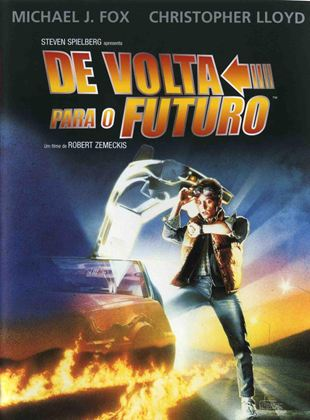

De Volta Para O Futuro
Sinopse
 Um jovem aciona acidentalmente uma máquina do tempo construída por um cientista em um Delorean, retornando aos anos 50. Lá conhece sua mãe, antes ainda do casamento com seu pai, que fica apaixonada por ele. Tal paixão põe em risco sua própria existência, pois alteraria todo o futuro, forçando-o a servir de cupido entre seus pais.
Resenha
"Seu futuro ainda não está escrito, o de ninguém está. Seu futuro será o que você quiser, então faça dele algo bom". A frase que representa a maior lição dos três filmes. Afinal, a trilogia é baseada em viagens no tempo enquanto McFly tenta consertar o futuro.
No primeiro, temos a história de um garoto (Marty) que tem como melhor amigo um “cientista maluco” (Doutor Brown), que no ano de 1985 inventou uma máquina do tempo adaptada a um carro DeLorean (veículo que se tornou um ícone da cultura pop). Marty viaja para o ano de 1955, bagunçando a linha temporal, o que coloca em risco a sua própria existência. Então ele precisa contar com a ajuda da versão mais jovem do Doutor Brown para conseguir voltar para o ano de 1985.
Marty tem um amigo bem mais velho que teve uma visão depois de levar uma pancada na cabeça há muitos anos: o capacitor de fluxo, uma geringonça que torna possível a viagem no tempo. Empregando toda a fortuna da família e trinta anos de sua vida, o doutor Emmet L. Brown (Christopher Lloyd) consegue realizar seu maior objetivo sob os olhos atônitos de Marty. Transformou um carro Delorean em uma máquina do tempo e pretende viajar para o passado e o futuro ao seu bel prazer. Um contratempo impede o doutor de embarcar nesta experiência e quem ocupa o seu lugar é Marty que, sem querer, vai parar em 1955. Lá, o rapaz interfere no primeiro encontro de seus pais colocando em risco sua própria existência. Para consertar o erro e voltar para seu lugar no tempo, Marty precisará da ajuda da versão mais jovem de seu amigo cientista.
Premios
Back to the Future venceu o Oscar de Melhor Edição de Som, para Charles Campbell e Robert Rutledge, enquanto "The Power of Love" foi indicada para Melhor Canção Original, Zemeckis e Gale para Melhor Roteiro Original e Bill Varney, B. Tennyson Sebastian II, Robert Thirlwell e William B. Kaplan para Melhor Mixagem de Som. O filme venceu o Hugo Award de Melhor Apresentação Dramática[35] e o Saturn Award de Melhor Filme de Ficção Científica. Fox e os desenhistas de efeitos visuais também venceram em suas respectivas categorias, enquanto Zemeckis, Silvestri, os figurinistas e os coadjuvantes Lloyd, Thompson, Glover e Wilson também foram indicados. O filme também recebeu várias indicações ao BAFTA Awards, nas categorias de Melhor Filme, Melhor Roteiro Original (Zemeckis e Gale), Melhores Efeitos Visuais Especiais (Kevin Pike e Ken Ralston), Melhor Desenho de Produção (Lawrence G. Paull) e Melhor Edição (Harry Keramidas e Arthur Schmidt). No Golden Globe Awards, Back to the Future foi indicado nas categorias de Melhor Filme – Comédia ou Musical, Melhor Canção Original (por "The Power of Love"), Melhor Ator – Comédia ou Musical (Fox) e Melhor Roteiro (Zemeckis e Gale).